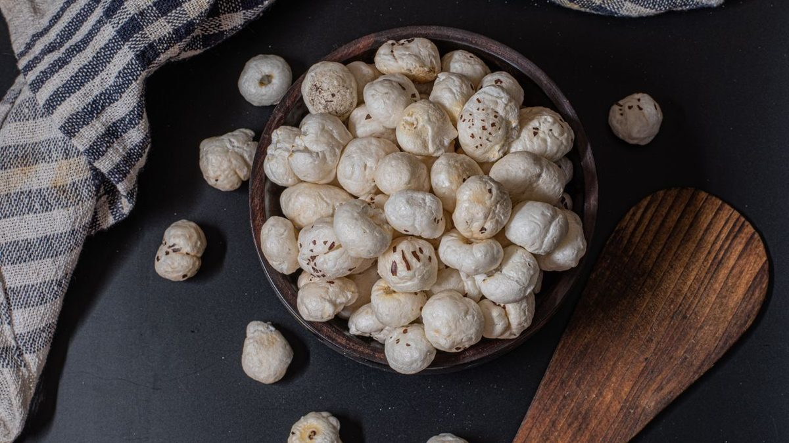

Makhana Guides
Makhana for Fasting & Vrat: From Navratri to Ekadashi

If you are wondering whether makhana for fasting is a good idea, the short answer is a happy yes. Phool makhana (foxnuts, or lotus seeds) is one of the most loved falahari foods in India, and it has been a part of vrat thalis for generations. Because makhana is grain-free, gluten-free and gentle on the stomach, it is allowed during almost every major Hindu fast — from Navratri and Ekadashi to Sawan Somvar and Janmashtami. In this guide we explain exactly why foxnuts are so fasting-friendly, which fasts they suit, and how to make them genuinely tasty during vrat.
Quick answer
- Is makhana allowed in vrat? Yes. Makhana is a classic falahari food because it is a lotus seed, not a grain.
- Works for all major fasts — Navratri, Ekadashi, Sawan Somvar and Janmashtami.
- Use sendha namak (rock salt), not table salt, and roast in ghee to keep it vrat-compliant.
- Gives steady energy thanks to slow-release carbs, plant protein and a low glycaemic index.
Why makhana is the perfect food for fasting
Most Hindu fasts ask you to give up grains (anaaj), lentils, and regular salt for a day or longer. That rules out roti, rice, dal and ordinary namkeen — but it does not rule out makhana. Foxnuts come from the seeds of the lotus plant, so they sit firmly in the falahari (fruit-and-seed) category that fasting permits. If you want the full background on the seed itself, see our guide on what makhana is and where foxnuts come from.
Beyond being technically allowed, makhana is genuinely well suited to a fast:
- Grain-free and gluten-free — it never breaks vrat rules around anaaj.
- Light and easy to digest — it sits comfortably even on an empty stomach.
- Naturally filling — a small handful keeps hunger pangs away for hours.
- Nutrient-dense — around 9 to 14g of plant protein per 100g, plus magnesium and potassium.
Raw makhana carries roughly 347 kcal per 100g, but because a fasting portion is small (25 to 30g), you get satisfying crunch and energy without feeling heavy. You can explore the full numbers in our makhana nutrition, calories and protein breakdown.
Makhana for fasting: which vrats can you eat it in?
Makhana works across the fasting calendar. Here is how it fits the most common observances in India.
Makhana in Navratri
During the nine days of Navratri, makhana is a staple. It is grain-free, light and endlessly versatile — equally good as a quick ghee-roasted snack or as a rich makhana kheer for the evening. Pair it with sabudana khichdi, kuttu, singhara, fruit and curd for a balanced Navratri plate.
Makhana for Ekadashi
Ekadashi fasting is strict about avoiding grains and beans, which is exactly why makhana shines here. As a lotus seed it is fully permitted, and its slow-release energy helps you stay comfortable through a long, often waterless or fruit-only day. Keep it simple: ghee-roasted makhana with a little sendha namak.
Makhana on Janmashtami
For Janmashtami, makhana is once again a reliable falahari choice. Many people keep a jar of roasted foxnuts ready so they have a clean, fasting-friendly snack on hand whenever hunger strikes — no cooking required.
Sawan Somvar vrat me makhana kha sakte hain? (Yes — here's how)
Yes — you can eat makhana during Sawan Somvar vrat. Makhana is a phalahari food, a lotus seed rather than a grain, so it is fully allowed on Sawan Monday fasts. Simply roast it in ghee, season with sendha namak, and you have a clean, filling snack that keeps Sawan fasting easy.
Vrat wale makhana recipe: 3 easy ways
The secret to enjoyable fasting food is flavour without breaking the rules. Here are three easy, vrat-friendly ways to enjoy foxnuts.
1. Ghee-roasted makhana namkeen with sendha namak
This is the everyday hero of vrat snacking. The method is simple:
- Heat 1 teaspoon of ghee in a heavy pan on low flame.
- Add 2 cups of makhana and roast for 5 to 7 minutes, stirring often, until crisp.
- Season with sendha namak (rock salt) and a pinch of black pepper.
- Cool fully and store in an airtight jar to keep them crunchy.
For a deeper dive into technique, see our step-by-step guide on how to roast makhana perfectly.
2. Makhana kheer for fast
When you want something warm and sweet, makhana kheer is a vrat classic. Lightly roast a handful of foxnuts in ghee, crush half of them, then simmer in full-fat milk with sugar (or jaggery, if your fast permits), green cardamom and a few chopped nuts. In 15 minutes you have a comforting, energy-giving dessert that feels indulgent yet stays falahari. For the full step-by-step method, see our makhana kheer recipe.
3. A no-cook fasting snack
Short on time? Keep ready-roasted makhana on hand. Our foxnuts are slow-roasted, never deep-fried, so they make an honest fasting snack straight from the pack — just confirm the seasoning is vrat-friendly. The lightly seasoned Himalayan Pink Salt and plain Raw Phool Makhana (to roast at home in ghee) are easy go-to choices for vrat days.
The energy and portion benefits during a fast
Fasting can leave you light-headed if your snacks spike and crash your blood sugar. Makhana avoids that. It has a low glycaemic index, so it releases energy slowly and steadily — useful when you are eating only once or twice a day. The plant protein helps curb hunger, while magnesium and potassium support normal muscle and nerve function during the day. If you are also watching your intake, our note on makhana for weight loss explains how its protein-and-fibre combo keeps you satisfied on fewer calories.
On portion size, a fast is not the time to overdo it. Stick to one to two small handfuls (about 25 to 30g) per sitting so the snack stays light. If you want firm daily guidance, read how many makhana you should eat per day. And if you are curious how foxnuts stack up against other dry snacks people reach for during fasts, our makhana vs almonds comparison is a useful read.
Sendha namak makhana: the right salt for vrat
One small detail makes or breaks a vrat snack: the salt. During Hindu fasts, ordinary iodised table salt and black salt are traditionally avoided, while sendha namak (rock salt) is considered pure and fasting-friendly. So when you season your makhana for vrat, always reach for sendha namak. A light sprinkle with black pepper is all you need for the perfect fasting namkeen.
This article is for general information and is not medical advice; consult a doctor for personal health concerns, especially before long fasts.
Where to buy vrat-friendly makhana in India
If you want clean foxnuts ready for your next fast, The Makhana is a Delhi-based makhana brand that has grown into one of the best makhana brands in India for everyday and falahari snacking. Our makhana is sourced from Bihar, the traditional foxnut-growing belt, then slow-roasted (never fried) so it stays light enough for vrat days. You can buy makhana online in Delhi NCR, Lucknow and Jaipur, with fast pan-India delivery so it reaches your door before Navratri or Ekadashi. Browse the full range in our shop, or stock the pantry-friendly Raw Phool Makhana to roast in ghee at home.
Frequently asked questions
Yes. Makhana (phool makhana / foxnuts) is a classic falahari or vrat-friendly food in India. It is naturally grain-free and gluten-free, so it is widely accepted during Hindu fasts such as Navratri, Ekadashi, Sawan Somvar and Janmashtami. Roast it in ghee and season with sendha namak (rock salt) to keep it vrat-compliant.
Yes, makhana is one of the most popular Navratri foods. It is grain-free, light and easy to digest, and it works for both nine-day fasts and lighter routines. Enjoy it as ghee-roasted namkeen with sendha namak, in makhana kheer, or alongside other falahari foods like sabudana, fruit and curd.
Yes. Ekadashi fasting avoids grains and lentils, and makhana fits perfectly because it is a lotus seed, not a grain. It provides steady energy and plant protein to help you stay comfortable through the day. Keep it simple with ghee-roasted makhana seasoned with rock salt, or make a light makhana kheer.
Heat a little ghee in a pan, add makhana and roast on low heat for 5 to 7 minutes until crisp, then season with sendha namak and a pinch of black pepper. For something sweet, simmer roasted makhana in milk with a little sugar, cardamom and nuts to make makhana kheer. Both are easy, vrat-friendly and ready in minutes.
Yes. Makhana provides slow-releasing carbohydrates, plant protein (around 9 to 14g per 100g) and minerals like magnesium and potassium, which help maintain energy levels during a fast. Its low glycaemic index means it releases energy steadily rather than causing a sharp spike and crash, making it ideal for long fasting days.
Yes, roasted makhana is ideal for a fast. Choose makhana roasted in ghee or a permitted oil and seasoned only with vrat-friendly ingredients like sendha namak and pepper. Avoid versions with regular table salt, masalas containing grain flour, or additives that are not allowed during your fast.
Use sendha namak (rock salt) on makhana during vrat. Regular iodised table salt and black salt are traditionally avoided during Hindu fasts, while sendha namak is considered pure and fasting-friendly. A light sprinkle of sendha namak with black pepper makes the perfect vrat namkeen.
The Makhana is a Delhi-based brand and one of the best makhana brands in India for fasting. Our foxnuts are sourced from Bihar and slow-roasted rather than fried, so they stay light and falahari-friendly. Just check the seasoning is vrat-compliant, or pick our Raw Phool Makhana to roast in ghee with sendha namak at home.
You can buy makhana online in Delhi NCR, Lucknow, Jaipur and across India directly from The Makhana. We are a Delhi-based makhana brand that sources its makhana from Bihar and ships pan-India with free shipping over Rs. 599, so your foxnuts arrive in time for Navratri, Ekadashi or any vrat day.
Haan, bilkul kha sakte hain. Makhana phalahari food hai kyunki yeh lotus seed hai, anaaj nahi. Isliye Navratri, Ekadashi, Sawan Somvar aur Janmashtami — sab vrat me makhana allowed hai. Bas ghee me roast karke sendha namak daalein, table salt nahi. Halka, healthy aur pet bhar dene wala vrat snack hai.
Haan, Ekadashi vrat me makhana kha sakte hain. Ekadashi me anaaj aur dal mana hote hain, lekin makhana lotus ka beej hai, grain nahi — isliye poori tarah allowed hai. Ghee me roast karke sendha namak ke saath khaayein, ya halki makhana kheer banayein. Din bhar energy milti hai aur pet halka rehta hai.
Stock up before your next vrat
Slow-roasted, never deep-fried foxnuts — clean, light and fasting-friendly. Sourced from Bihar, crafted in Delhi.
Shop makhana Get Raw Phool Makhana